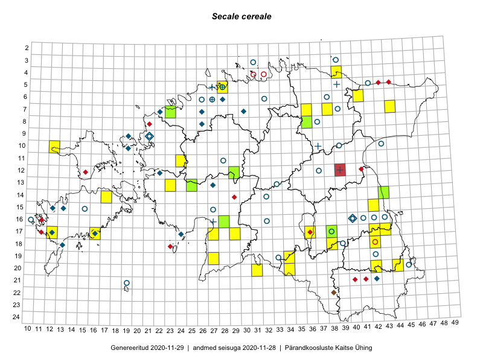

Secale cereale
Uuendatud: 2016-12-07
Kaardile koondatud taksonid: Secale cereale L.

Kaart põhineb 28 vaatlusel. Taime on leitud 18 ruudust.
| Ruut | Vaatleja(d) | Vaatlusaeg | Kirje tüüp | Viide andmebaasikirjele |
|---|---|---|---|---|
| 15-42 | Peedu Saar, Eerik Leibak | 2015-07-30 | punkt | vaata PlutoFis |
| 15-42 | Peedu Saar, Eerik Leibak | 2015-07-30 | ruut/ala | vaata PlutoFis |
| 06-41 | Toomas Kukk, Tiit Hallikma | 2015-07-24 | ruut/ala | vaata PlutoFis |
| 06-41 | Tiit Hallikma, Toomas Kukk | 2015-07-24 | punkt | vaata PlutoFis |
| 14-17 | Meeli Mesipuu, Kadri Tali | 2015-07-08 | ruut/ala | vaata PlutoFis |
| 17-43 | Thea Kull, Eerik Leibak | 2015-07-05 | ruut/ala | vaata PlutoFis |
| 17-12 | Mari Reitalu, Triin Reitalu | 2015-07-22 | ruut/ala | vaata PlutoFis |
| 17-12 | Mari Reitalu, Triin Reitalu | 2015-07-31 | punkt | vaata PlutoFis |
| 13-23 | Kirsi Loide, Marje Loide | 2015-08-18 | ruut/ala | vaata PlutoFis |
| 17-42 | Kirsi Loide, Marje Loide | 2015-07-27 | ruut/ala | vaata PlutoFis |
| 18-42 | Kirsi Loide, Marje Loide | 2015-07-28 | ruut/ala | vaata PlutoFis |
| 07-44 | Timo Luhamäe, Eerik Leibak | 2015-05-30 | ruut/ala | vaata PlutoFis |
| 17-16 | Sirje Azarov, Aira Alasi | 2015-08-12 | ruut/ala | vaata PlutoFis |
| 07-44 | Timo Luhamäe, Eerik Leibak | 2015-05-30 | punkt | vaata PlutoFis |
| 04-39 | Kaili Orav, Silvia Pihu | 2015-06-19 | ruut/ala | vaata PlutoFis |
| 04-39 | Kaili Orav, Silvia Pihu | 2015-06-19 | punkt | vaata PlutoFis |
| 20-42 | Vivika Väli, Ülo Väli | 2015-07-27 | punkt | vaata PlutoFis |
| 20-34 | Silvia Pihu, Illi Tarmu | 2015-07-13 | ruut/ala | vaata PlutoFis |
| 20-34 | Silvia Pihu, Illi Tarmu | 2015-07-13 | punkt | vaata PlutoFis |
| 20-42 | Peedu Saar, Tarmo Niitla | 2016-06-16 | punkt | vaata PlutoFis |
| 20-42 | Vivika Väli, Ülo Väli | 2015-07-27 | ruut/ala | vaata PlutoFis |
| 17-36 | Helle Mäemets | 2015-07-01 | ruut/ala | vaata PlutoFis |
| 20-42 | Tarmo Niitla, Peedu Saar | 2016-06-16 | ruut/ala | vaata PlutoFis |
| 07-38 | Liina Oja, Eerik Leibak | 2016-07-28 | ruut/ala | vaata PlutoFis |
| 07-36 | Thea Kull, Timo Luhamäe | 2016-07-27 | ruut/ala | vaata PlutoFis |
| 10-12 | Sander Laherand, Maret Gerz, Nele Jõessar | 2016-08-10 | ruut/ala | vaata PlutoFis |
| 07-38 | Liina Oja, Eerik Leibak | 2016-07-28 | punkt | vaata PlutoFis |
| 20-31 | Meeli Mesipuu, Mari Metsoja | 2016-07-19 | punkt | vaata PlutoFis |